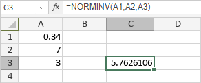

NORMINV funkcija
Funkcija NORMINV je jedna od statističkih funkcija. Koristi se za vraćanje inverzne normalne kumulativne raspodele za zadatu srednju vrednost i standardnu devijaciju.
Sintaksa
NORMINV(probability, mean, standard_dev)
Funkcija NORMINV ima sledeće argumente:
| Argument | Opis |
|---|---|
| probability | Verovatnoća koja odgovara normalnoj raspodeli, bilo koja numerička vrednost veća od 0, ali manja od 1. |
| mean | Aritmetička sredina raspodele, bilo koja numerička vrednost. |
| standard_dev | Standardna devijacija raspodele, numerička vrednost veća od 0. |
Napomene
Kako primeniti funkciju NORMINV.
Primeri
Slika ispod prikazuje rezultat koji vraća funkcija NORMINV.
